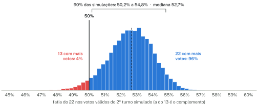
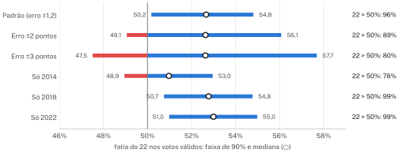
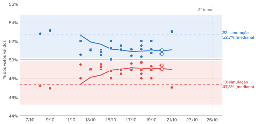
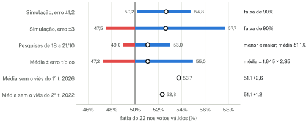

Simulação de Monte Carlo do 2º turno presidencial de 2026
A migração de votos entre turnos em 2014, 2018 e 2022, estimada por inferência ecológica, aplicada ao 1º turno de 2026, com validação fora da amostra e comparação com as pesquisas
Resumo
Este relatório descreve uma simulação de Monte Carlo do 2º turno da eleição presidencial de 2026, entre o 13 (Lula, PT) e o 22 (Flávio Bolsonaro, PL). O ponto de partida é o 1º turno de 4 de outubro, em que o 22 teve 47,0% dos votos válidos e o 13, 45,2%. Para onde vão os eleitores dos outros candidatos, os votos brancos e nulos e a abstenção é estimado por inferência ecológica com os resultados por seção de 2014, 2018 e 2022 e aplicado aos votos de 2026, estado por estado.
Em 20 mil sorteios com as escolhas-padrão, a mediana é de 47,3% dos válidos para o 13 e 52,7% para o 22. Em 90% das simulações, o 22 fica entre 50,2% e 54,8%. O 13 passa de 50% em 4% das simulações e o 22, em 96%. Esse resultado depende sobretudo do tamanho do erro somado a cada sorteio, medido em só três testes fora da amostra (erros de −0,8, +0,8 e +1,8 ponto). Com erro de ±2 pontos, as proporções passam a 11% e 89%; com ±3 pontos, a 20% e 80%.
A média das 14 pesquisas divulgadas de 18 a 21 de outubro dá 51,1% dos válidos ao 22. Somada ao erro típico das pesquisas de véspera no 1º turno de 2026 e no 2º turno de 2022, ela forma uma faixa de 47,2% a 55,0%, que contém a faixa de 90% da simulação. A concordância entre dois métodos independentes é um sinal de coerência, não uma prova. Nenhum dos dois é uma previsão do resultado.
Palavras-chave: inferência ecológica; matriz de transição; bootstrap; Monte Carlo; validação fora da amostra; pesquisas eleitorais.
1Introdução e pergunta
No 1º turno de 4 de outubro de 2026, o 22 teve 47,0% dos votos válidos e o 13, 45,2%: uma diferença de 1,9 ponto. Os outros onze candidatos somaram 7,8% dos válidos. Além deles, 6,0 milhões de eleitores votaram em branco ou anularam o voto, e 32,9 milhões (20,8% dos aptos) não foram votar. Perto do tamanho desses grupos, a diferença entre os dois finalistas é pequena. O 2º turno depende de como eles vão se comportar.
O voto é secreto, então não se sabe diretamente o que fizeram no 2º turno, em eleições passadas, os eleitores de quem ficou de fora. Mas os resultados por seção eleitoral dos dois turnos permitem estimar esse comportamento médio. A pergunta deste estudo é condicional:
Se os eleitores de 2026 se comportarem no 2º turno como eleitores parecidos se comportaram em 2014, 2018 e 2022, qual seria o resultado, e com quanta incerteza?
A simulação de Monte Carlo é a ferramenta para a segunda metade da pergunta. Ela junta três fontes de incerteza: qual eleição passada é a melhor referência para 2026, a imprecisão das estimativas de migração e o erro que o método teve quando foi testado em eleições passadas. O resultado é uma distribuição de resultados possíveis, não um número.
O relatório segue a ordem do cálculo: os dados (seção 2), a estimação da migração (3), o teste do método em eleições passadas (4), o desenho da simulação (5), os resultados e a sensibilidade (6) e a comparação com as pesquisas (7). A seção 8 reúne as limitações. Todo o cálculo pode ser refeito no simulador interativo, que permite mudar cada escolha descrita aqui.
2Dados
- 1º turno de 2026. Boletins de urna publicados pelo TSE [1], com os votos de cada candidato, brancos, nulos, eleitores aptos e comparecimento de cada seção (157,8 milhões de aptos). Na simulação, entram somados por estado. Os votos do exterior não fazem parte desses arquivos.
- 2014, 2018 e 2022. Votação por seção eleitoral nos dois turnos e o detalhe de cada seção (aptos, comparecimento, brancos e nulos), também do TSE [2, 3]: 427.920 seções em 2014, 453.701 em 2018 e 471.010 em 2022. É deles que sai a estimativa da migração.
- Pesquisas de intenção de voto. 27 pesquisas do 2º turno de 2026 e 15 pesquisas de véspera (1º turno de 2026, 1º e 2º turnos de 2022), como divulgadas pela imprensa [11–37]. Elas não entram na simulação; aparecem só na seção 7, para comparação.
Em cada eleição, os eleitores aptos do 1º turno são divididos em sete grupos: o principal candidato da esquerda (E), o principal da direita (D), os outros candidatos de esquerda (OE), de centro (OC) e de direita (OD), brancos e nulos (BN) e abstenção (AB). No 2º turno, há quatro destinos: E, D, BN e AB. Em 2026, E é o 13 e D é o 22. A Tabela 1 mostra o 1º turno de 2026 nesses grupos.
Tabela 1. O 1º turno de 2026 nos sete grupos usados pelo modelo, com a classificação-padrão dos demais candidatos.
| Grupo | Quem está no grupo | Eleitores | % dos aptos | % dos válidos |
|---|---|---|---|---|
| E | Candidato principal da esquerda Lula (13) | 53.722.151 | 34,0% | 45,2% |
| D | Candidato principal da direita Flávio Bolsonaro (22) | 55.960.603 | 35,5% | 47,0% |
| OE | Outros de esquerda e centro-esquerda Samara (80), Hertz Dias (16), Edmilson Costa (21), Rui Costa Pimenta (29) | 201.685 | 0,1% | 0,2% |
| OC | Outros de centro Augusto Cury (70) | 3.438.835 | 2,2% | 2,9% |
| OD | Outros de direita Renan Santos (14), Ronaldo Caiado (55), Zema (30), Clariana Barao (27) e mais 2 | 5.651.755 | 3,6% | 4,8% |
| BN | Brancos e nulos votos em branco e nulos | 5.959.040 | 3,8% | — |
| AB | Abstenção eleitores aptos que não votaram | 32.894.899 | 20,8% | — |
| Total de eleitores aptos | 157.828.968 | 100,0% |
A classificação dos outros candidatos em esquerda, centro e direita é uma escolha do autor, feita pelo campo do partido; o simulador permite mudá-la. Fonte: TSE, boletins de urna do 1º turno de 2026.
3Inferência ecológica da migração de votos
3.1Modelo
Para cada seção s, seja x(s) o vetor com a fração dos aptos em cada um dos sete grupos do 1º turno e y(s) o vetor com a fração em cada um dos quatro destinos do 2º turno. O modelo supõe que existe uma matriz de transição B, de 7 linhas e 4 colunas, comum às seções de uma região:
É a ideia da regressão ecológica de Goodman [7]: se nas seções em que um grupo é maior o candidato A cresce mais no 2º turno, é sinal de que os eleitores desse grupo foram para A. As restrições (linhas no simplex: sem negativos e somando 1) impedem os resultados impossíveis que a regressão sem restrições costuma produzir [8]. Há uma matriz por eleição e por região (Norte, Nordeste, Centro-Oeste, Sudeste e Sul), porque os eleitores de um mesmo candidato não migram da mesma forma em todo o país.
3.2Estimador dentro do município
O risco clássico da inferência ecológica é atribuir a um grupo o comportamento do lugar onde ele mora (a falácia ecológica). Bairros e cidades diferentes votam diferente por muitas razões, e essa diferença se confunde com a migração. Para reduzir o problema, o ajuste compara principalmente seções do mesmo município: cada variável é medida como desvio da média do seu município, e só 10% da variação entre municípios entra, para fixar a direção que a comparação interna não determina. A estimativa resolve mínimos quadrados ponderados pelos eleitores aptos:
O problema é convexo e é resolvido por gradiente projetado acelerado (FISTA) [10], projetando cada linha de B no simplex a cada passo.
3.3Efeito de contexto
A migração dos grupos grandes que não são os finalistas pode depender da inclinação política do lugar. Em 2014, por exemplo, os eleitores de Marina Silva foram muito mais para Aécio Neves nas seções em que Aécio já era forte. Se o modelo ignora isso, joga essa variação sobre os grupos pequenos, que costumam se concentrar em certos bairros. Por isso as linhas de centro (OC), brancos e nulos (BN) e abstenção (AB) podem variar linearmente com a inclinação da seção, z(s) = D / (E + D) no 1º turno, medida como desvio da média da região. Os termos de interação somam zero em cada linha, para que as linhas continuem somando 1 em qualquer contexto. A matriz usada na simulação é a do contexto médio.
3.4Grupos pequenos
Um grupo com poucos eleitores numa região tem pouco sinal próprio nos dados, e a estimativa da sua linha fica instável. Nas linhas OE, OC, OD e BN, a estimativa final combina os dados do próprio grupo com o comportamento do mesmo campo político em todas as eleições e regiões (agregação parcial):
Isso importa para 2026. Os candidatos de direita que ficaram de fora (OD) somaram 4,8% dos válidos, muito mais que o mesmo grupo em 2022. Naquele ano, o grupo OD era tão pequeno que só cerca de 20% da sua linha nacional vem dos próprios dados (Tabela 2); o resto vem do mesmo campo em outras eleições e regiões.
3.5Incerteza por bootstrap
A incerteza das matrizes é medida por bootstrap [9]: os municípios de cada região são reamostrados com reposição 120 vezes, e todo o ajuste (incluindo a agregação parcial) é refeito em cada reamostra. Reamostrar municípios, e não seções, respeita a dependência entre seções do mesmo município. O resultado são 120 matrizes por eleição e região, que a simulação sorteia. Como há centenas de milhares de seções, essa parte da incerteza é pequena perto das outras.
3.6As matrizes estimadas
A Tabela 2 resume as matrizes nacionais. Elas mostram algumas regularidades: os eleitores dos dois finalistas repetem o voto em mais de 90% dos casos; quem se absteve no 1º turno quase sempre se abstém de novo; e o grupo de centro se divide de forma diferente a cada eleição. Em 2014 e 2018 ele pendeu para a direita (cerca de 58% e 56% para D); em 2022, dividiu-se quase ao meio (43% para E e 38% para D).
Tabela 2. Para onde foi cada grupo do 1º turno no 2º turno, em % dos eleitores do grupo. Média das cinco regiões, ponderada pelo tamanho do grupo em cada uma. A cor da célula acompanha o valor.
| Grupo no 1º turno | Esquerda | Direita | Brancos e nulos | Abstenção |
|---|---|---|---|---|
| 2014 | ||||
| Candidato principal da esquerda Dilma Rousseff | 97 | 1 | 1 | 2 |
| Candidato principal da direita Aécio Neves | 1 | 96 | 1 | 3 |
| Outros de esquerda e centro-esquerda * Luciana Genro, Eduardo Jorge, Zé Maria e outros | 55 | 24 | 11 | 10 |
| Outros de centro Marina Silva | 30 | 58 | 7 | 5 |
| Outros de direita * Pastor Everaldo, Levy Fidelix, Eymael | 34 | 35 | 24 | 7 |
| Brancos e nulos | 36 | 19 | 42 | 4 |
| Abstenção | 0 | 5 | 0 | 94 |
| 2018 | ||||
| Candidato principal da esquerda Fernando Haddad | 92 | 0 | 3 | 4 |
| Candidato principal da direita Jair Bolsonaro | 0 | 97 | 1 | 2 |
| Outros de esquerda e centro-esquerda Ciro Gomes, Guilherme Boulos, Marina Silva e outros | 77 | 11 | 8 | 4 |
| Outros de centro Geraldo Alckmin, Henrique Meirelles, Alvaro Dias | 23 | 56 | 20 | 2 |
| Outros de direita João Amoêdo, Cabo Daciolo, Eymael | 24 | 48 | 22 | 6 |
| Brancos e nulos | 31 | 14 | 55 | 0 |
| Abstenção | 3 | 3 | 1 | 94 |
| 2022 | ||||
| Candidato principal da esquerda Lula | 94 | 2 | 2 | 3 |
| Candidato principal da direita Jair Bolsonaro | 0 | 99 | 0 | 1 |
| Outros de esquerda e centro-esquerda Ciro Gomes, Léo Péricles, Sofia Manzano e outros | 44 | 35 | 14 | 7 |
| Outros de centro Simone Tebet, Soraya Thronicke | 43 | 38 | 18 | 1 |
| Outros de direita * Felipe d'Avila, Padre Kelmon, Eymael | 27 | 45 | 21 | 6 |
| Brancos e nulos | 20 | 26 | 52 | 2 |
| Abstenção | 4 | 4 | 1 | 91 |
* Grupo pequeno: menos de 90% da linha vem dos próprios dados; o resto, do mesmo campo político em outras eleições e regiões (seção 3.4). E e D são, em 2014, Dilma Rousseff e Aécio Neves; em 2018, Fernando Haddad e Jair Bolsonaro; em 2022, Lula e Jair Bolsonaro.
Uma conferência independente vem da pesquisa Datafolha feita logo depois do 1º turno de 2022 [6], que perguntou aos eleitores de Simone Tebet e de Ciro Gomes em quem votariam no 2º turno. Para os eleitores de Tebet, a divisão confere com a estimada aqui. Para os de Ciro, não: a pesquisa mediu 31% para Lula e 42% para Bolsonaro, e a estimativa dá 44% e 35%. A subamostra de Ciro era pequena e a pesquisa foi feita no começo da campanha, mas a divergência fica registrada.
4Validação fora da amostra
A melhor medida de quanto confiar no método é usá-lo para prever uma eleição que ele não viu. O teste aplica as matrizes de uma eleição ao 1º turno real da eleição seguinte e compara o 2º turno previsto com o real. Há três combinações possíveis com os dados disponíveis (Tabela 3).
Tabela 3. Validação fora da amostra: fatia da esquerda (E) nos votos válidos e comparecimento no 2º turno, previstos e reais. Erro = previsto − real, em pontos percentuais.
| Migração de | Aplicada a | Esquerda prevista | Esquerda real | Erro (p.p.) | Compar. previsto | Compar. real |
|---|---|---|---|---|---|---|
| 2014 | 2018 | 44,1% | 44,9% | −0,75 | 77,5% | 78,8% |
| 2018 | 2022 | 51,7% | 50,9% | +0,83 | 78,1% | 79,6% |
| 2014 | 2022 | 52,7% | 50,9% | +1,77 | 77,5% | 79,6% |
| Raiz da média dos quadrados dos erros | 1,21 | |||||
Os erros na fatia da esquerda foram de −0,8 ponto (2014→2018), +0,8 (2018→2022) e +1,8 (2014→2022). A raiz da média dos quadrados é 1,2 ponto, e esse é o desvio-padrão do erro somado a cada simulação (seção 5). Três observações merecem cuidado:
- São só três testes, e dois deles usam a mesma eleição de origem (2014). Uma estimativa de desvio-padrão com três pontos é muito imprecisa; por isso a seção 6 mostra o resultado com erros maiores.
- O erro cresce com a distância entre as eleições: 2014→2022 errou mais que os testes entre eleições vizinhas. Para 2026, a referência mais próxima é 2022.
- O comparecimento foi subestimado nos três testes, em 1,4 a 2,0 pontos: no 2º turno vota um pouco mais gente do que as matrizes preveem. O efeito disso sobre a divisão dos válidos não tem sinal conhecido.
5Desenho do Monte Carlo
A simulação repete N = 20.000 vezes o sorteio descrito abaixo. Cada repetição é um 2º turno possível; o conjunto delas é a distribuição dos resultados.
- Sorteia uma eleição de referência a ∈ {2014, 2018, 2022}, com probabilidades 0,15, 0,35 e 0,50. A de 2022 tem os candidatos mais parecidos com os de 2026; a de 2014, que opôs PT e PSDB, os mais diferentes.
- Sorteia uma matriz por região, ao acaso entre as 120 do bootstrap da eleição a (seção 3.5). As cinco regiões usam a mesma eleição de referência.
- Aplica as matrizes ao 1º turno de 2026, estado por estado: os votos de cada grupo do estado vão para E, D, BN e AB conforme a matriz da sua região. Somam-se os estados.
- Soma um erro nacional ε ~ Normal(0; σ), com σ = 1,2 ponto (o erro dos testes da seção 4), à fatia do 22 nos válidos.
Algumas escolhas desse desenho merecem justificativa:
- Os pesos 15/35/50 são subjetivos. Eles expressam o quanto cada eleição parece com a de 2026. A seção 6 mostra o resultado com cada eleição sozinha.
- O erro é um só para o país. Ele representa o que muda entre eleições e atinge todos os estados ao mesmo tempo, como uma mudança de humor do eleitorado. É a maior fonte de incerteza da simulação, bem maior que a do bootstrap.
- O erro é normal, sem caudas pesadas. Com três testes, não há como estimar a forma da cauda.
- O sorteio é reprodutível. O simulador usa um gerador pseudoaleatório com semente fixa (mulberry32, semente 20261025), e a mesma configuração dá sempre o mesmo resultado. Com 20 mil sorteios, o erro de Monte Carlo de uma probabilidade perto de 96% é de cerca de 0,14 ponto, desprezível perto das outras incertezas.
- Opções fora do padrão. O simulador também permite somar incerteza extra às matrizes (sorteio de Dirichlet em torno de cada linha) e mudar o comparecimento. Elas não entram nos resultados deste relatório.
As figuras deste relatório foram feitas com uma reimplementação em Python do mesmo algoritmo, com o mesmo gerador e a mesma semente. Ela reproduz os números da página com diferença máxima de 0,04 ponto (Apêndice A).
6Resultados
Com as escolhas-padrão, a mediana das 20 mil simulações dá 47,3% dos válidos ao 13 e 52,7% ao 22. Em 90% delas, o 22 fica entre 50,2% e 54,8% (e o 13, entre 45,2% e 49,8%). O 13 passa de 50% em 4% das simulações e o 22, em 96% (Figura 1).

A vantagem do 22 na simulação vem de duas partes. A primeira é o próprio 1º turno: o 22 começou 1,9 ponto à frente. A segunda é a migração. Os grupos que mais pesam são os de direita fora da disputa (OD, 4,8% dos válidos), que em 2018 e 2022 foram bem mais para a direita do que para a esquerda (em 2014 se dividiram), e o de centro (2,9%), cuja divisão variou entre as eleições.
A distribuição é uma mistura das três eleições de referência. Sozinha, cada uma dá uma mediana diferente para o 22: 51,0% com 2014, 52,8% com 2018 e 53,0% com 2022. A diferença entre os anos (dois pontos) é menor que a largura da faixa produzida pelo erro somado, então a escolha dos pesos importa menos que o tamanho desse erro.
E o tamanho do erro está mal determinado, porque vem de três testes. A Tabela 4 e a Figura 2 mostram o mesmo cálculo com erros de ±2 e ±3 pontos, este último perto do erro que as pesquisas costumam ter (seção 7). A mediana quase não muda; o que muda é a largura da faixa e, com ela, a chance de cada um.
Tabela 4. Sensibilidade ao erro somado e à eleição de referência. "13 > 50%" e "22 > 50%": fração das simulações em que cada um passa de 50% dos válidos. Linha destacada: escolhas-padrão.
| Pesos 2014/18/22 | Erro somado | Mediana 13 | Mediana 22 | Faixa de 90% do 22 | 13 > 50% | 22 > 50% |
|---|---|---|---|---|---|---|
| 15 / 35 / 50 | ±1,2 ponto (erro dos testes) | 47,3% | 52,7% | 50,2% a 54,8% | 4% | 96% |
| 15 / 35 / 50 | ±2 pontos | 47,4% | 52,6% | 49,1% a 56,1% | 11% | 89% |
| 15 / 35 / 50 | ±3 pontos | 47,4% | 52,6% | 47,5% a 57,7% | 20% | 80% |
| só 2014 | ±1,2 ponto | 49,0% | 51,0% | 48,9% a 53,0% | 22% | 78% |
| só 2018 | ±1,2 ponto | 47,2% | 52,8% | 50,7% a 54,8% | 1% | 99% |
| só 2022 | ±1,2 ponto | 47,0% | 53,0% | 51,0% a 55,0% | 1% | 99% |

A leitura honesta é: com o comportamento do eleitor de 2014 a 2022, o 22 fica 2,7 pontos acima de 50% na mediana (de 1,0 a 3,0, conforme a eleição de referência), e a chance de o 13 passar de 50% vai de 4% a 20%, conforme o tamanho do erro que se aceite (22% se só 2014 servir de referência). Nenhuma dessas chances é desprezível.
7Comparação com as pesquisas
As pesquisas e a simulação respondem a perguntas diferentes e erram por motivos diferentes. As pesquisas perguntam ao eleitor hoje e captam a campanha do 2º turno; a simulação ignora a campanha e supõe que o comportamento de 2014 a 2022 se repete. Por isso a comparação é uma conferência de coerência, não uma validação.
7.1As pesquisas do 2º turno
Foram reunidas 27 pesquisas com campo entre 3 e 21 de outubro, 14 delas divulgadas de 18 a 21. Nessas 14, o 22 tem de 49,0% a 53,0% dos válidos (média de 51,1%) e o 13, de 47,0% a 51,0% (média de 48,9%). A média fica dentro da faixa de 90% da simulação, 1,6 ponto abaixo da sua mediana (Figura 3).

7.2Quanto as pesquisas erraram antes
A Tabela 5 compara as pesquisas de véspera com o resultado em três ocasiões. O erro é a pesquisa menos o resultado: negativo quer dizer que a pesquisa deu menos do que o candidato teve.
Tabela 5. Erro das pesquisas de véspera, em pontos percentuais dos votos válidos (pesquisa − resultado). "22 a dois": erro na fatia do 22 entre os votos do 13 e do 22, a medida comparável com o 2º turno. Em 2022, o 22 era Jair Bolsonaro.
| 1º turno de 2026 | 1º turno 2022 | 2º turno de 2022 | ||||
|---|---|---|---|---|---|---|
| Instituto | 13 | 22 | 22 a dois | 22 | 13 | 22 |
| AtlasIntel | +1,8 | −2,9 | −2,6 | −2,1 | +2,3 | −2,3 |
| CNT/MDA | +2,6 | −4,9 | −4,2 | — | +0,2 | −0,2 |
| Datafolha | −0,2 | −5,0 | −2,7 | −7,2 | +1,1 | −1,1 |
| PoderData/Aya | −0,2 | −4,0 | −2,2 | — | — | — |
| Quaest | +0,8 | −2,0 | −1,6 | −5,2 | — | — |
| Ipec | — | — | — | −6,2 | +3,1 | −3,1 |
| Paraná Pesquisas | — | — | — | −3,2 | −0,5 | +0,5 |
| Média | +1,0 | −3,8 | −2,6 | −4,8 | +1,2 | −1,2 |
| Resultado (% dos válidos) | 45,2 | 47,0 | 51,0 | 43,2 | 50,9 | 49,1 |
No 1º turno de 2022, a fonte usada não registra o número do 13 para três dos cinco institutos; por isso a tabela mostra só o erro no 22 nessa eleição. Fontes: [11–37].
No 1º turno de 2026, as cinco pesquisas da tabela subestimaram o 22 em 2 a 5 pontos, enquanto o erro no 13 ficou entre −0,2 e +2,6 pontos. O padrão foi o mesmo no 1º turno de 2022 (de 2,1 a 7,2 pontos a menos para Jair Bolsonaro). No 2º turno de 2022, os erros foram menores, de −3,1 a +0,5 ponto no 22, com média de −1,2.
O erro do 1º turno é sobre a fatia de cada candidato entre todos os candidatos, e parte dele vem dos outros nomes. Para comparar com um 2º turno, a medida adequada é a fatia do 22 só entre os votos do 13 e do 22 ("22 a dois"). Nessa medida, o erro do 1º turno de 2026 foi menor: de −1,6 a −4,2 pontos, com média de −2,6.
7.3Uma conta simples
Se as pesquisas de hoje errarem como as de véspera erraram antes, onde deve estar o resultado? A conta mais simples soma à média atual o erro típico das pesquisas, medido como a raiz da média dos quadrados dos dez erros na disputa a dois disponíveis (cinco do 1º turno de 2026 e cinco do 2º turno de 2022), e supõe um erro normal (Tabela 6).
Tabela 6. Faixa construída com as pesquisas comparada com a faixa da simulação (fatia do 22 nos votos válidos).
| Passo | Valor | |
|---|---|---|
| 1 | Média das 14 pesquisas divulgadas de 18 a 21/10 (fatia do 22 nos válidos) | 51,09% |
| 2 | Erro típico das pesquisas de véspera: raiz da média dos quadrados dos 10 erros na disputa a dois (1º turno de 2026 e 2º turno de 2022) | 2,35 p.p. |
| 3 | Faixa de 90% supondo erro normal: média ± 1,645 × erro típico | 47,2% a 55,0% |
| 4 | Faixa de 90% da simulação, escolhas-padrão | 50,2% a 54,8% |
| 5 | Faixa de 90% da simulação com erro de ±3 pontos | 47,5% a 57,7% |
| 6 | Média das pesquisas corrigida pelo viés médio do 1º turno de 2026 na disputa a dois | 53,7% |
| 7 | Média das pesquisas corrigida pelo viés médio do 2º turno de 2022 | 52,3% |

A faixa das pesquisas, de 47,2% a 55,0%, contém inteira a faixa de 90% da simulação (50,2% a 54,8%). Ela tem largura parecida com a da simulação de erro de ±3 pontos (47,5% a 57,7%), deslocada cerca de um ponto e meio na direção do 13. E a média das pesquisas, 51,1%, cai dentro da faixa padrão da simulação. Dois métodos independentes, um que olha o eleitor de hoje e outro que olha o comportamento do eleitor no passado, chegam a faixas compatíveis.
Isso reforça a coerência do método, mas não prova nada. A amostra de erros é pequena (dez pesquisas, de duas eleições); os erros dos institutos andam juntos, como mostra a Tabela 5, e por isso a faixa não é um intervalo de confiança com cobertura garantida; e os dois métodos podem errar na mesma direção.
7.4O que implica o erro do 1º turno de 2026
O fato mais relevante da Tabela 5 é o viés na mesma direção. No 1º turno de 2026, as pesquisas subestimaram o 22 em 2 a 5 pontos, e na disputa a dois, em 2,6 pontos em média. Há três leituras possíveis, e os dados disponíveis não permitem escolher entre elas:
- O viés se repete inteiro. A média corrigida seria 53,7% para o 22, perto da mediana da simulação (52,7%).
- O viés se repete como no 2º turno de 2022, menor. A média corrigida seria 52,3%.
- O viés não se repete. Os institutos podem ter ajustado seus métodos depois do 1º turno. O erro do 1º turno também pode ter vindo de algo que não existe numa disputa a dois, como a migração de última hora de eleitores de outros candidatos. Nesse caso, vale a média atual, 51,1%.
Nos três casos, o valor fica dentro da faixa de 90% da simulação. Nenhum deles permite tratar o resultado como decidido. A faixa construída com as pesquisas tem valores dos dois lados de 50%, e a simulação também, quando se usa um erro do tamanho do das pesquisas (com ±3 pontos, o 13 passa de 50% em 20% das simulações). Um viés passado não garante um viés futuro, nem a sua direção.
8Limitações
- Não é pesquisa nem previsão. A simulação supõe que os eleitores de 2026 migram como os de eleições passadas. Debates, notícias, apoios e qualquer fato da campanha do 2º turno ficam de fora.
- Os candidatos mudam. A direita principal foi Aécio Neves em 2014, Jair Bolsonaro em 2018 e 2022, e é Flávio Bolsonaro em 2026. Os candidatos fora da disputa também são outros, e o grupo de direita de 2026 é muito maior que os de antes (seção 3.4).
- A inferência ecológica estima médias de grupos. O estimador dentro do município e as restrições reduzem a falácia ecológica, mas não a eliminam. A divergência com o Datafolha nos eleitores de Ciro em 2022 é um lembrete disso.
- A classificação dos candidatos é uma escolha. Mudá-la altera o resultado, e o simulador permite testar isso.
- O tamanho do erro vem de três testes, dois deles com a mesma eleição de origem. Por isso a sensibilidade da seção 6 importa tanto quanto o resultado central.
- Erro normal e nacional. A simulação não tem erros regionais próprios nem caudas mais pesadas que as da normal. Uma surpresa grande em uma região só, ou maior que as já vistas, fica subestimada.
- Comparecimento. A abstenção é redistribuída como no passado. Nos testes, o comparecimento real foi 1,4 a 2,0 pontos maior que o previsto.
- Votos do exterior não estão nos dados do 1º turno usados aqui. São menos de 1% do eleitorado.
- Pesquisas. Foram usadas como divulgadas pela imprensa, sem acesso aos microdados. Algumas só publicaram votos totais; nesses casos, os válidos foram calculados como candidato ÷ (13 + 22). A lista de erros de véspera não inclui todos os institutos.
Referências e fontes
Dados do TSE
- Tribunal Superior Eleitoral. Resultados 2026: boletim de urna (1º turno). Portal de Dados Abertos. https://dadosabertos.tse.jus.br/dataset/resultados-2026-boletim-de-urna
- Tribunal Superior Eleitoral. Votação por seção eleitoral, 2014, 2018 e 2022. https://cdn.tse.jus.br/estatistica/sead/odsele/votacao_secao/votacao_secao_2022_BR.zip (idem para 2014 e 2018)
- Tribunal Superior Eleitoral. Detalhe da votação por seção, 2014, 2018 e 2022. https://cdn.tse.jus.br/estatistica/sead/odsele/detalhe_votacao_secao/detalhe_votacao_secao_2022.zip (idem para 2014 e 2018)
- Tribunal Superior Eleitoral. Portal de Dados Abertos. https://dadosabertos.tse.jus.br/
- Tribunal Superior Eleitoral. Divulgação de resultados. https://resultados.tse.jus.br/oficial/app/index.html
Métodos e conferência
- Datafolha. Pesquisa de intenção de voto para presidente, 5 a 7 de outubro de 2022 (publicada pelo Poder360). https://static.poder360.com.br/2022/10/pesquisa-presidente-datafolha-5-7-out-2022.pdf
- Goodman, L. A. (1953). Ecological regressions and behavior of individuals. American Sociological Review, 18(6), 663–664.
- King, G. (1997). A Solution to the Ecological Inference Problem: Reconstructing Individual Behavior from Aggregate Data. Princeton University Press.
- Efron, B.; Tibshirani, R. J. (1993). An Introduction to the Bootstrap. Chapman & Hall.
- Beck, A.; Teboulle, M. (2009). A fast iterative shrinkage-thresholding algorithm for linear inverse problems. SIAM Journal on Imaging Sciences, 2(1), 183–202.
Pesquisas de intenção de voto
- Poder360 (compilação) (2º turno de 2026). https://www.poder360.com.br/poder-eleicoes-2026/saiba-como-estao-lula-e-flavio-nas-pesquisas-a-7-dias-do-2o-turno/
- O Povo (Quaest, 2º turno de 2026; Datafolha, 2º turno de 2026). https://www.opovo.com.br/noticias/politica/eleicoes/2026/10/14/datafolha-e-quaest-divulgam-novas-pesquisas-sobre-2-turno-entre-lula-e-flavio.html
- Bahia Notícias (Veritá, 2º turno de 2026). https://www.bahianoticias.com.br/noticia/322563-pesquisa-verita-aponta-flavio-vencendo-com-511-e-lula-ficando-em-489-na-simulacao-de-segundo-turno
- Blog do Robson Pires (DataTrends, 2º turno de 2026). https://robsonpiresxerife.com/pesquisa-datatrends-flavio-bolsonaro-tem-515-dos-votos-validos-contra-485-de-lula/
- Exame (Futura, 2º turno de 2026). https://exame.com/brasil/pesquisa-futura-para-presidente-flavio-bolsonaro-tem-504-e-lula-496-no-2o-turno/
- Metrópoles (Vox Brasil, 2º turno de 2026). https://www.metropoles.com/brasil/vox-brasil-com-empate-tecnico-lula-tem-464-e-flavio-bolsonaro-446
- CNN Brasil (AtlasIntel, 2º turno de 2026). https://www.cnnbrasil.com.br/eleicoes/atlas-flavio-tem-511-dos-votos-validos-no-2o-turno-lula-489/
- Nexus (BTG/Nexus, 2º turno de 2026). https://www.nexus.fsb.com.br/estudos-divulgados/pesquisa-btg-nexus-de-intencao-de-votos-para-presidente-do-brasil-19-de-outubro-de-2026/
- Poder360 (PoderData/Aya, 2º turno de 2026). https://www.poder360.com.br/poderdata/pesquisa-poderdata-aya-leia-os-resultados-de-lula-e-flavio-no-2o-turno-19out2026/
- CNN Brasil (Alfa Inteligência, 2º turno de 2026). https://www.cnnbrasil.com.br/eleicoes/alfa-flavio-tem-515-dos-votos-validos-no-2o-turno-lula-485/
- CNN Brasil (Meio/Ideia, 2º turno de 2026). https://www.cnnbrasil.com.br/eleicoes/meio-ideia-flavio-tem-511-dos-votos-validos-no-2o-turno-lula-489/
- The Rio Times (Real Time Big Data, 2º turno de 2026). https://www.riotimesonline.com/real-time-big-data-poll-flavio-52-lula-48-runoff-2026/
- CNN Brasil (Veritá, 2º turno de 2026). https://www.cnnbrasil.com.br/eleicoes/verita-flavio-tem-507-dos-votos-validos-no-2o-turno-lula-493/
- CartaCapital (Futura, 2º turno de 2026). https://www.cartacapital.com.br/politica/flavio-e-lula-seguem-tecnicamente-empatados-mostra-pesquisa-futura/
- Terra (Palver, 2º turno de 2026). https://www.terra.com.br/noticias/eleicoes/pesquisas/pesquisa-palver-flavio-bolsonaro-tem-50-e-lula-48-no-2-turno-candidatos-estao-em-empate-tecnico,6e99d76af4651a537219166fa78a4183lmte1cxs.html
- Folha de Londrina (Quaest, 2º turno de 2026). https://www.folhadelondrina.com.br/politica/a-4-dias-do-pleito-lula-e-flavio-seguem-em-empate-tecnico-3328718e.html
- CNN Brasil (Gerp, 2º turno de 2026). https://www.cnnbrasil.com.br/eleicoes/gerp-flavio-tem-53-dos-votos-validos-no-2o-turno-lula-47-2/
- Exame (Datafolha, 1º turno de 2026). https://exame.com/brasil/pesquisa-datafolha-para-presidente-lula-tem-45-e-flavio-bolsonaro-42-dos-votos-validos-no-1o-turno/
- CNN Brasil (Quaest, 1º turno de 2026). https://www.cnnbrasil.com.br/eleicoes/quaest-lula-tem-46-dos-votos-validos-no-1o-turno-flavio-45/
- Diario de Pernambuco (AtlasIntel, 1º turno de 2026). https://www.diariodepernambuco.com.br/politica/2026/10/11725710-atlasintel-lula-tem-47-e-flavio-bolsonaro-441-de-votos-validos-no-primeiro-turno.html
- BNews (PoderData/Aya, 1º turno de 2026). https://www.bnewssaopaulo.com.br/noticias/politica/poderdataaya-lula-tem-45-dos-votos-validos-no-1-turno-flavio-43.html
- Diário do Grande ABC (CNT/MDA, 1º turno de 2026). https://www.dgabc.com.br/Noticia/4350555/cnt-mda-lula-tem-47-8-dos-votos-validos-flavio-soma-42-1-e-cury-3-6
- Fundação Perseu Abramo (Datafolha, 1º turno de 2022; Ipec, 1º turno de 2022; Quaest, 1º turno de 2022). https://fpabramo.org.br/onde-as-pesquisas-podem-ter-errado/
- Congresso em Foco (AtlasIntel, 1º turno de 2022; Paraná Pesquisas, 1º turno de 2022; CNT/MDA, 2º turno de 2022; Paraná Pesquisas, 2º turno de 2022). https://www.congressoemfoco.com.br/noticia/121840/veja-previsoes-eleitorais-de-pesquisas-que-acertaram-resultado-em-2022
- Tribuna PR (Datafolha, 2º turno de 2022). https://www.tribunapr.com.br/eleicoes/2022/pesquisa-datafolha-lula-tem-52-contra-48-de-bolsonaro-na-vespera-da-eleicao/
- A Gazeta (Ipec, 2º turno de 2022). https://www.agazeta.com.br/brasil/pesquisa-ipec-lula-tem-54-dos-votos-validos-e-bolsonaro-46-1022
- O Povo (AtlasIntel, 2º turno de 2022). https://www.opovo.com.br/eleicoes-2022/2022/10/27/pesquisa-atlas-intel-lula-vai-a-532-e-bolsonaro-recua-a-468.html
Pesquisas de 9 a 18/10 a partir da compilação do Poder360; as divulgadas de 17 a 21/10, das reportagens indicadas. Consulta em 21/10/2026.
Apêndice A. Reprodução dos números
Código e dados derivados: github.com/LuisFHartmann/eleicao-em-numeros.
O simulador da página roda no navegador, em JavaScript. As figuras deste relatório foram feitas por um programa à parte, em Python (pipeline/relatorio_simulacao.py), que reimplementa o mesmo algoritmo: mesmo gerador pseudoaleatório (mulberry32), mesma semente, mesma ordem de sorteios e o mesmo quantil com interpolação linear. A Tabela A1 compara os dois. As diferenças vêm só do arredondamento da página para uma casa decimal.
Tabela A1. Números da página (arredondados como publicados) e da reimplementação em Python, com 20 mil simulações.
| Configuração | Mediana do 22 (página) | Mediana do 22 (Python) | 22 > 50% (página) | 22 > 50% (Python) |
|---|---|---|---|---|
| Padrão | 52,7% | 52,66% | 96% | 95,99% |
| Erro ±2 | 52,6% | 52,63% | 89% | 88,96% |
| Erro ±3 | 52,6% | 52,63% | 80% | 80,03% |
| Só 2014 | 51,0% | 50,97% | — | 78,25% |
| Só 2018 | 52,8% | 52,77% | — | 98,83% |
| Só 2022 | 53,0% | 53,00% | — | 99,41% |
Para refazer tudo: python pipeline/transferencia.py estima as matrizes (site/dados/transferencia.json); python pipeline/relatorio_simulacao.py roda as simulações, confere com a página, desenha as figuras, preenche as tabelas desta página e gera o PDF com o Chrome. Os dados derivados estão na pasta dados/ do site.